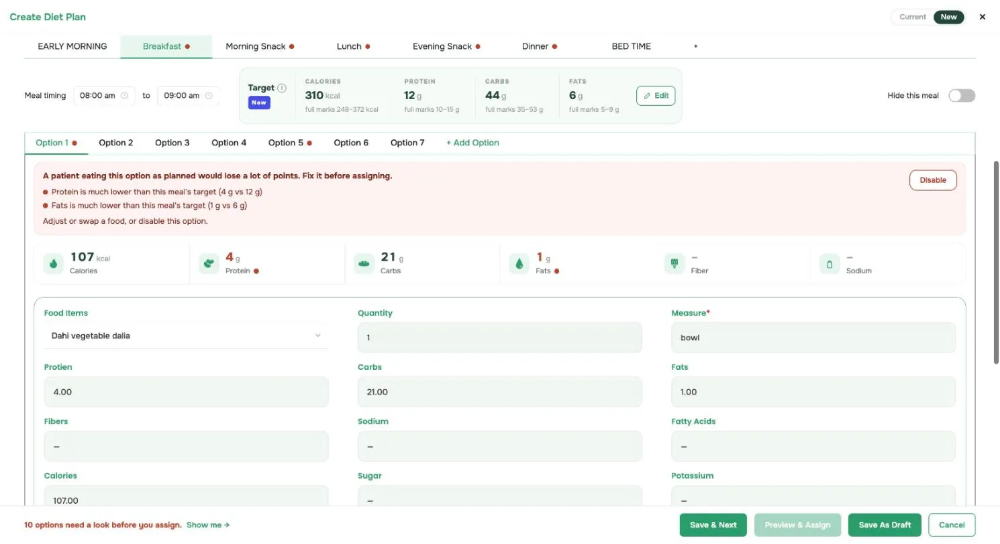
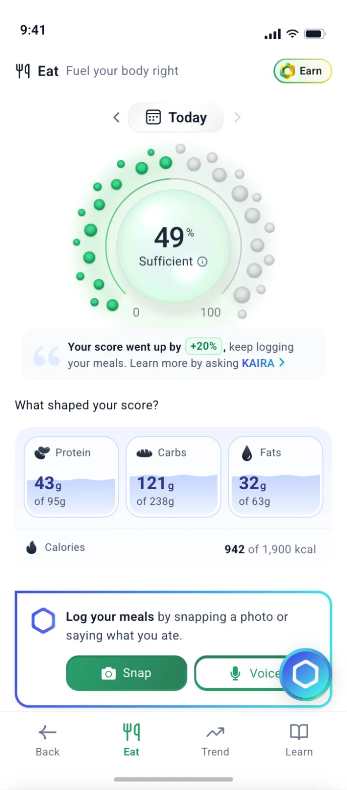
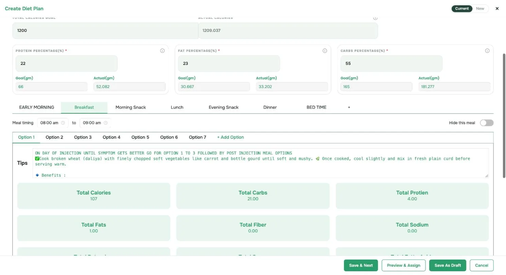
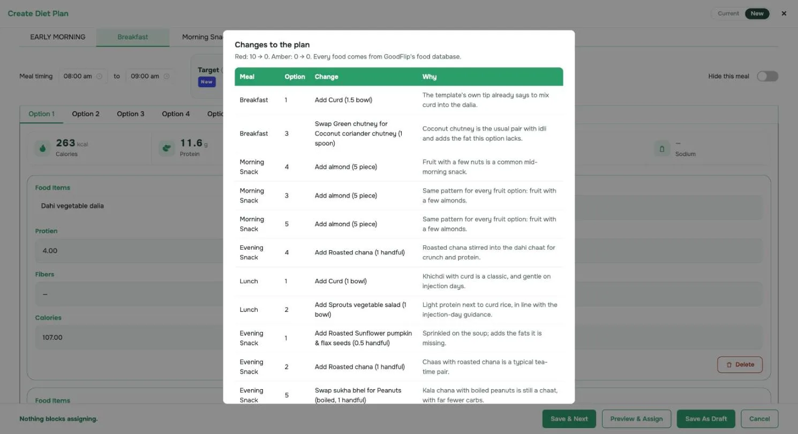
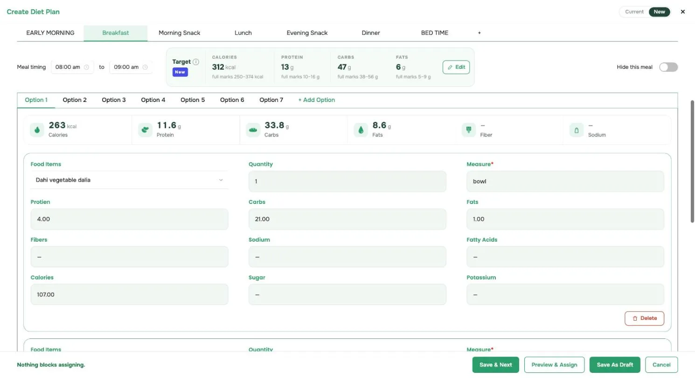
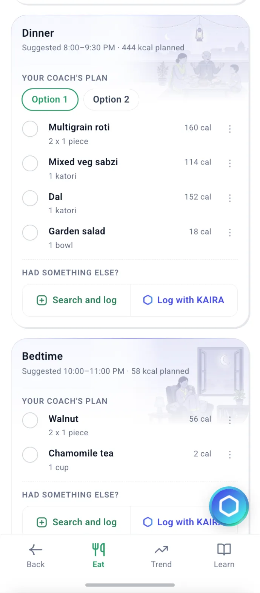
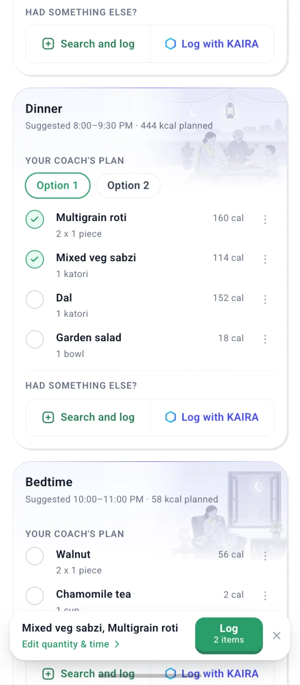
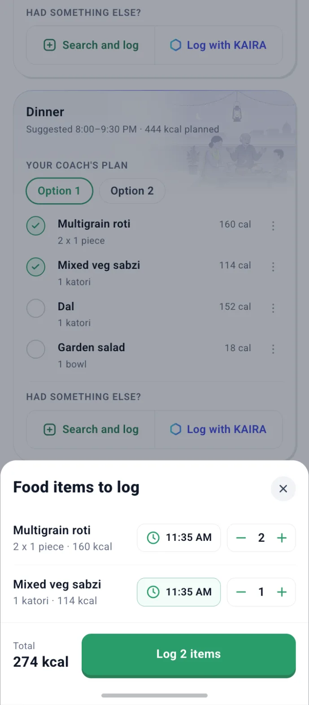
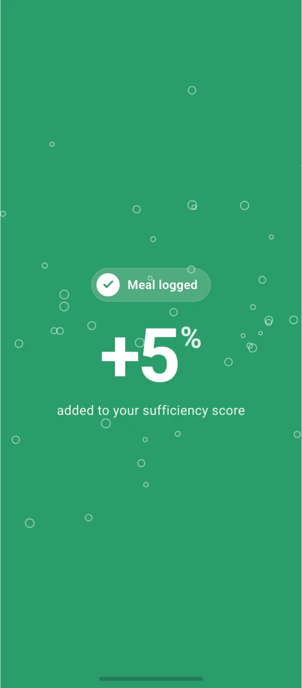
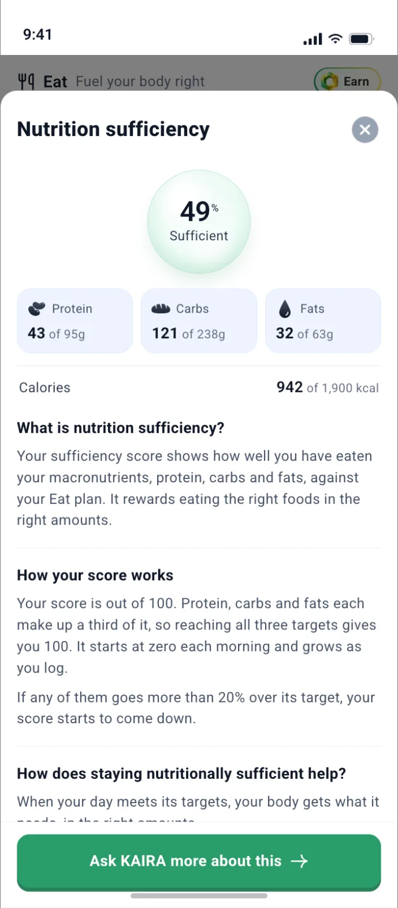

Worked through one real template, Weight loss 1,200 kcal (GLP), in the coach portal and the Eat app.


The same template, as the coach sees it now.

1234First add up each option's foods (option 3: idli 3 × 2 g + green chutney 0 g + sambhar 6 g = 12 g protein). Then line up the option totals and take the middle one. Do it for protein, carbs, fats and calories.
Breakfast: each option's protein total, smallest to largest (g)
What the coach sees
Target = middle of the option totals · options under 20 kcal left outThe middle ignores one odd option: Dahi dalia's 4 g doesn't pull it down.
The one points rule. The portal uses it for red dots, and the app uses it for the patient's score. Example: protein target of 12 g.
Top = target + 20% or + 3 g, whichever is more. Between 9.6 g and 15 g, eating more of it changes nothing.
GLP breakfast as the template comes. Worked through for option 3 (idli, green chutney, sambhar).
For every option, add up what its foods give. Option 3, where 3 idlis at 2 g protein each is 3 × 2 g:
Protein: Idli (3 × 2 g) + Green chutney 0 g + Sambhar 6 g = 12 gCarbs: Idli (3 × 13 g) + Green chutney 1 g + Sambhar 18 g = 58 gFats: Idli (3 × 0 g) + Green chutney 0 g + Sambhar 3 g = 3 gLine up the 7 option totals from step 1, smallest to largest, and take the middle one. Protein:
4, 12, 12, 12, 12.5, 13.5, 14 → 12 gDo the same for carbs (44 g) and fats (6 g).
Compare each option's total (step 1) with the target (step 2). Full marks from 80% of the target up to 20% over (at least 3 g over):
Protein 12 g, inside 9.6–15 g → 100Carbs 58 g, over 52.8 g → 100 − (58 − 52.8) ÷ 44 × 100 = 88Fats 3 g, under 4.8 g → 3 ÷ 4.8 × 100 = 62Option 3: lowest is 62 pts → no dot.
Option 1: protein 42 pts, fats 21 pts → red dot. The plan can't be assigned until the coach fixes or disables this option.
| Option | Proteintarget 12 g · red under 5.8 g or over 19.8 g | Carbstarget 44 g · red under 21.1 g or over 70.4 g | Fatstarget 6 g · red under 2.9 g or over 11.4 g | Result |
|---|---|---|---|---|
| Option 1Dahi vegetable dalia | 4 g42 pts | 21 g60 pts | 1 g21 pts | Red |
| Option 2Ragi porridge (salted) + Buttermilk (lowfat) | 12.5 g100 pts | 38.5 g100 pts | 8.5 g100 pts | OK |
| Option 3Idli + Green chutney + Sambhar | 12 g100 pts | 58 g88 pts | 3 g62 pts | OK |
| Option 4Oats upma + moong sprouts | 14 g100 pts | 52 g100 pts | 6 g100 pts | OK |
| Option 5Paneer paratha (multigrain) + Capsicum Tomato Chutney | 12 g100 pts | 43.5 g100 pts | 11.5 g58 pts | Red |
| Option 6Moong dal chilla + Amla Coriander Chutney | 12 g100 pts | 35 g99 pts | 6 g100 pts | OK |
| Option 7Mix Dal Dosa + Sambhar | 13.5 g100 pts | 60 g84 pts | 6 g100 pts | OK |
Under 60 pts means less than 48% of the target, or more than the top of the full-marks range plus 40% of the target. Options under 20 kcal (water, tea) are not checked.
Red if, eaten exactly, any of protein, carbs or fats would score under 60.
Breakfast option 1, Dahi vegetable dalia: add curd (1.5 bowl).
Before · 41
After · 97
Every change uses foods already in the portal's templates. Changing options moves the middle, so targets are recalculated after each change.
14 changes: 8 fix a red option directly, 6 are optional (for example, almonds with every fruit snack). The other 2 red options clear on their own once the targets move.


12Right: after the changes, the breakfast target is 312 kcal · 13 · 47 · 6 g, and nothing blocks assigning.
The fixed GLP plan, at the moment the coach assigns it. These numbers don't change when the patient logs.
The middle option totals from step 1, after the coach's fixes. Breakfast:
312 kcal · 13 g protein · 47 g carbs · 6 g fatsFor each number, add every meal's target. Protein:
13 + 4 + 17 + 9 + 12 + 8 = 63 gSame for carbs (205 g), fats (43 g) and calories (1,466 kcal).
Meal calories ÷ day calories. A bigger meal counts for more in the day score:
Breakfast 312 ÷ 1,466 = 21.3%All the weights add up to 100%.
Macro cards: "0 g of 63 g" protein, and so on, for the whole day.
Meal card: "0 of 312 kcal planned" for breakfast.
The weights stay behind the scenes and are used in the day score.
| Meal | kcal | Protein | Carbs | Fats | Weight = meal kcal ÷ day kcal |
|---|---|---|---|---|---|
| Breakfast | 312 | 13 g | 47 g | 6 g | 312 ÷ 1,466 = 21.3% |
| Morning Snack | 124 | 4 g | 14 g | 6 g | 124 ÷ 1,466 = 8.5% |
| Lunch | 378 | 17 g | 59 g | 9 g | 378 ÷ 1,466 = 25.8% |
| Evening Snack | 176 | 9 g | 21 g | 6 g | 176 ÷ 1,466 = 12.0% |
| Dinner | 306 | 12 g | 46 g | 8 g | 306 ÷ 1,466 = 20.9% |
| Bed Time | 170 | 8 g | 18 g | 8 g | 170 ÷ 1,466 = 11.6% |
| Day | 1,466 | 63 g | 205 g | 43 g | 100% |
Early morning (jeera water, 2 kcal) has no target. It is ticked as done and is not part of the score.
Prototype screens, sample data. Under this rule, ticks from any option and foods from search or KAIRA all add up into one plate. Try it live with the GLP plan →




Breakfast target: 13 g protein · 47 g carbs · 6 g fats. The patient logs foods from three different options.
2 idlis (option 3), 1 moong dal chilla (option 6), 1.5 bowls of curd (option 1). Portions can differ from the plan.
Option numbers don't matter. Only what was eaten:
Protein: 4 + 6 + 7.6 = 17.6 gCarbs: 26 + 17 + 12.8 = 55.8 gFats: 0 + 3 + 7.6 = 10.6 gSame rule as the red dot. Full marks from 80% of the target up to 20% over (at least 3 g over):
Protein 17.6 g, over 16 g → 100 − (17.6 − 16) ÷ 13 × 100 = 87Carbs 55.8 g, inside 37.6–56.4 g → 100Fats 10.6 g, over 9 g → 100 − (10.6 − 9) ÷ 6 × 100 = 73(87 + 100 + 73) ÷ 3 = 87Breakfast's weight is 21.3%:
87 × 21.3% = +18.4 to the day score| After each log | Proteintarget 13 g | Carbstarget 47 g | Fatstarget 6 g | Meal score | Adds to day× 21.3% |
|---|---|---|---|---|---|
| Idli 2 numberfrom option 3 | 4 g38 pts | 26 g69 pts | 0 g0 pts | 36 | 7.6 |
| + Moong dal chilla 1 numberfrom option 6 | 10 g96 pts | 43 g100 pts | 3 g62 pts | 86 | 18.3 |
| + Curd 1.5 bowlfrom option 1 | 17.6 g87 pts | 55.8 g100 pts | 10.6 g73 pts | 87 | 18.4 |
The score is worked out again after every log, from the whole plate so far. Calories are shown but don't change the score.
Breakfast target 13 g protein · 47 g carbs · 6 g fats.
Target already set: 312 kcal · 13 g protein · 47 g carbs · 6 g fats. Breakfast is 21.3% of the day.
Points never go below −50, so eating every option takes breakfast to −50 and pulls the day down by 10.7. The day score itself never goes below 0.
Each meal adds its share of the day × its meal score. An on-plan GLP day:
Same GLP plan. Each block is one meal, sized by its share of the day.
All 7,350 ways to eat one option per meal in the fixed GLP plan.
Water options are left out here; see the decisions at the end.
Each day: one option per meal, eaten as written. 2,000 random days per template.
The last row compares two different templates. Today the lowest is Soft Diet- Bariatric Surgery (34), with 12 red options; with them fixed it scores 100. After fixing, the lowest is PCOD/PCOS insulin resistance (74).
"No red" was tested by taking red options out and recalculating targets, a stand-in for fixing them with food. 25 options in 10 meals stay red because every option there was red.
Protein target 12 g: points as you eat more
From 80% of the target to the top, the score doesn't move. The macro card should say "in range" from there.
Eating double: the cost depends on the target size
The 3 g allowance over makes small targets more forgiving: doubling a 4 g target scores 75, a 25 g target 20.
Bed time: jeera water or haldi milk. Target comes from the milk. Picking the water scores 0 for bed time; the day drops 100 → 88.
Meal targets add up to 1,466 kcal, goal is 1,200. Today's Actual would read 1,357.7, as it averages in the water options.
Before fixes, morning snack protein was 2 g. A kiwi (0.8 g) scored 51 on protein for a 1.2 g gap.
The sufficiency sheet says "more than 20% over". The rule also allows at least 3 g over. One should change.

add up each option's foods, then take the middle option total, per numberBreakfast protein: 4, 12, 12, 12, 12.5, 13.5, 14 → 12 gx ÷ (0.8 × T) × 1009 g of 12 g → 9 ÷ 9.6 × 100 = 940.8T to T + max(0.2T, 3 g) → 10012 g target → 9.6 to 15 g100 − (x − top) ÷ T × 100, min −5024 g of 12 g → 100 − 9 ÷ 12 × 100 = 25(P + C + F points) ÷ 3Idli + moong dal chilla: (85 + 65 + 100) ÷ 3 = 83meal kcal target ÷ day kcal targetLunch: 378 ÷ 1,466 = 25.8%Σ (share × meal score), never below 0Lunch skipped: 100 − 25.8 = 74eaten exactly, any number scores under 60Dahi dalia: protein 42, fats 21 → red